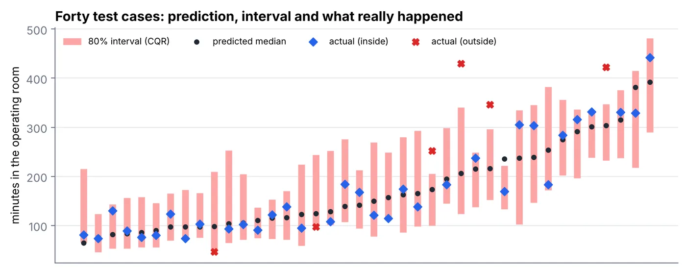
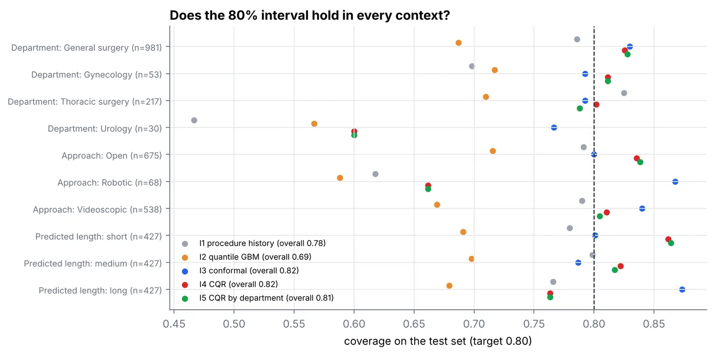
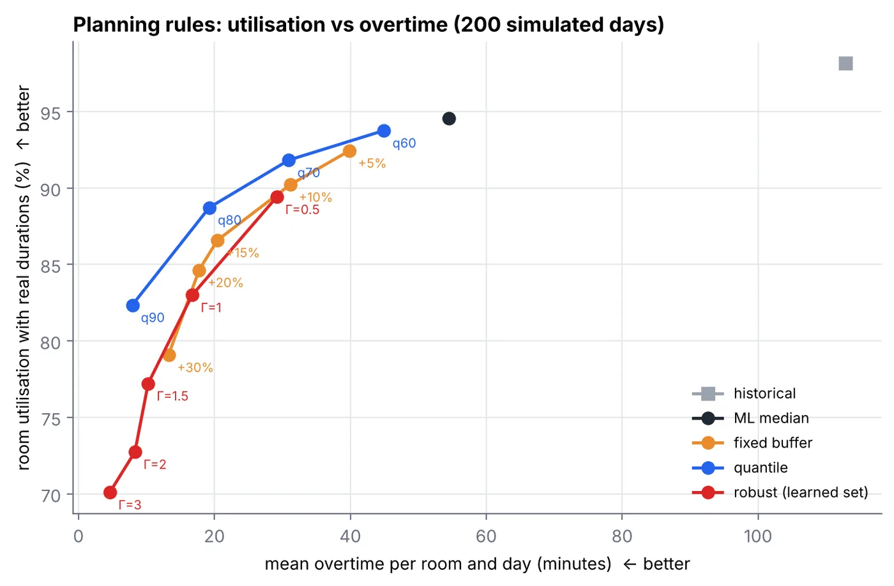

Étude de recherche · octobre 2026 · Python, scikit-learn, HiGHS
Des données aux plannings de bloc robustes
À quel point la durée d'une opération est-elle incertaine, et qu'est-ce que le fait d'apprendre cette incertitude change dans un planning de bloc opératoire ?
- 6 385opérations en données ouvertes (VitalDB)
- 80,1 %de couverture pour un intervalle visé à 80 %, contre 76,5 % avec l'historique
- 113 → 19 minde dépassement par salle et par jour
- 88,7 %d'occupation des salles
La question
Les plannings de bloc opératoire reposent sur des durées prévues. Pourtant, l'incertitude autour de ces prévisions est le plus souvent ignorée, ou remplacée par une marge identique pour toutes les opérations. L'étude pose deux questions :
- Peut-on apprendre cette incertitude à partir des informations connues avant l'opération, et un intervalle annoncé « à 80 % » contient-il vraiment 80 % des cas, globalement et dans chaque contexte chirurgical ?
- Utiliser cette incertitude apprise dans un modèle de planification donne-t-il de meilleurs plannings que les pratiques habituelles (moyennes historiques, marges fixes) ?
Les données
VitalDB (Lee et al., Scientific Data, 2022, licence CC BY 4.0) : 6 388 opérations non cardiaques réalisées à l'hôpital universitaire national de Séoul. La variable à prédire est le temps passé en salle, de l'entrée à la sortie du patient : c'est ce qu'un planning doit réserver. Après retrait de trois cas de plus de 16 heures, il reste 6 385 opérations pour 6 089 patients (médiane 165 min, moyenne 189 min).
Seules les informations disponibles au moment de planifier sont utilisées : âge, classe ASA, examens préopératoires, service, intervention prévue, voie d'abord, etc. Les mesures prises pendant l'opération sont exclues pour ne pas « tricher ». Les données sont découpées par patient : 60 % pour l'apprentissage, 20 % pour la calibration, 20 % pour le test.
La méthode
Prédire une durée
Trois prédictions de la durée médiane sont comparées : la médiane globale, l'historique de la même intervention (la pratique courante), et un modèle de gradient boosting (scikit-learn).
Construire des intervalles à 80 %
Cinq méthodes : les percentiles historiques de l'intervention, la régression quantile, la prédiction conforme, la régression quantile conforme (CQR, Romano et al., 2019) et une CQR calibrée séparément dans chaque service. Elles sont comparées par leur couverture, leur largeur et le score d'intervalle (Gneiting et Raftery, 2007), qui récompense les intervalles étroits et pénalise les cas qui en sortent. Toute l'évaluation est répétée sur 10 découpages aléatoires.
Planifier sous incertitude
200 journées simulées : 4 salles de 8 heures et une liste d'attente de 24 opérations programmées tirées du jeu de test. Un modèle exact en nombres entiers (set packing, résolu avec le solveur HiGHS) choisit quelles opérations mettre dans quelle salle. Chaque règle de planification produit son planning : médianes historiques, médiane prédite, marges fixes de 5 à 30 %, quantiles appris de 60 à 90 %, et modèle robuste « à budget » (Bertsimas et Sim, 2004). Chaque planning est ensuite rejoué avec les vraies durées pour mesurer les dépassements et l'occupation des salles.
Les résultats
1. La prédiction seule ne suffit pas
Le gradient boosting réduit l'erreur moyenne de 50,7 à 45,6 minutes par rapport à l'historique de l'intervention (sur 10 découpages). Mais environ la moitié des opérations restent à plus de 30 minutes de leur prédiction : il faut un intervalle, pas seulement un chiffre.
2. Les intervalles habituels sont trop optimistes
Les percentiles historiques ne couvrent que 76,5 % des nouveaux cas, et la régression quantile brute 67,7 %, au lieu des 80 % annoncés. La CQR atteint 80,1 %, avec le meilleur score d'intervalle : elle bat l'historique sur 10 découpages sur 10.

3. La couverture n'est pas la même partout
Derrière la moyenne, certains contextes sont mal couverts : 66 % en chirurgie robotique (68 cas), 60 % en urologie (30 cas). Calibrer par service fait passer le service le moins bien couvert de 74 % à 76 % en moyenne, mais ne corrige pas l'urologie, qui n'a qu'une vingtaine de cas de calibration.

4. De meilleurs plannings
Planifier sur les médianes historiques donne 113 minutes de dépassement par salle et par jour, et 80 % des salles finissent en retard : les durées sont asymétriques, chaque opération dépasse sa médiane de 10,4 minutes en moyenne, et ces retards s'additionnent dans une salle.
Planifier chaque opération à son 80e percentile appris ramène les dépassements à 19 minutes, avec 88,7 % d'occupation des salles : 2,1 points de plus qu'une marge uniforme de 15 % pour le même niveau de dépassement. La marge est mise là où est l'incertitude, au lieu de protéger autant les opérations courtes et prévisibles que les longues et incertaines.

5. Un résultat négatif
Le modèle robuste à budget, construit sur les écarts appris, s'est montré trop prudent : à dépassement égal, il perd environ 10 points d'occupation face aux quantiles appris. Il protège chaque salle contre ses pires écarts survenant tous en même temps, ce qui arrive rarement.
Les limites
- Un seul hôpital, coréen, et sans dates : les résultats peuvent ne pas se transposer, et le découpage aléatoire ignore les évolutions dans le temps.
- Pas de données de salle de réveil, pourtant déterminante en pratique.
- Plannings simplifiés : salles identiques, pas de contraintes de chirurgien ou d'équipement, pas d'urgences.
- Les garanties de la prédiction conforme sont valables en moyenne, pas dans chaque petit groupe.
Tout se relance avec python run_all.py (environ 10 minutes) et redonne les mêmes chiffres.